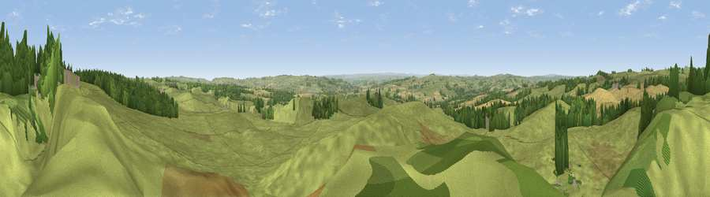

Viewpoint near Gunnerton
#17091 in England · top 40% of its area beats it · near GunnertonWhere it is
The exact computed spot (NY 91625 76325). Click the marker for map links.
The view, rendered

A 360° render of this exact spot computed from the terrain model, tree cover and land cover — summer colours, afternoon light, calibrated against photographs of famous viewpoints. Real trees, hedges and buildings will differ in detail.
The panorama
Grey silhouette: terrain skyline in each direction (720 bearings, Earth curvature and refraction included). Dashed green: skyline with trees (+15 m) and buildings (+8 m) as obstacles. Blue strip: how far the ground is visible on each bearing.
Where the view opens
Wedge length = distance to the farthest visible ground on that bearing (vegetation-aware). Rings at 10, 25 and 50 km.
What fills the view
80% grassland · 11% woodland · 8% cropland · 1% built-up
Angular shares of the visible panorama (visual magnitude), not map area. Landscape diversity 0.29 (0–1 Shannon).
Key numbers
More beautiful places nearby
The staircase of upgrades: each row has a higher view potential than everything closer. Driving times are estimates from straight-line distance, calibrated against real road routing — check an actual route before setting out.
| Place | Direction | Drive | Score |
|---|---|---|---|
| Viewpoint near Gunnerton | SSW · 0 km | ~2 min | 55.6 |
| Viewpoint near Redesmouth | NNW · 5 km | ~11 min | 64.9 |
| Viewpoint near Chollerford | SSE · 6 km | ~14 min | 65.3 |
| Viewpoint near Chollerford | SSE · 7 km | ~15 min | 67.5 |
| Viewpoint near West Woodburn | N · 7 km | ~15 min | 69.1 |
| Viewpoint near West Woodburn | N · 8 km | ~16 min | 73.4 |
| Darden Rigg | NNE · 21 km | ~36 min | 77.0 |
| Viewpoint near Thropton | NNE · 25 km | ~40 min | 81.8 |
55.08130, -2.13272 · source: screening · position refined by local search. Computed location — check access rights before visiting.